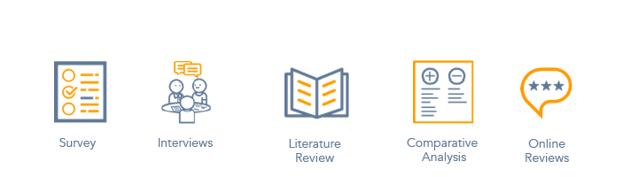

Methods
User Interviews, Comparative Analysis, Literature Review, Surveys, & Usability Testing
Duration
12 weeks
Role
UX Researcher & Designer
Team
Neha Dhawan & Rugved Arte
Problem Statement
To create awareness about University Health Services (UHS) and make it easier to access health services at UHS for all students at the University of Michigan
Motivation
To create awareness and make it easier and convenient for students at the University of Michigan to seek healthcare. There is general confusion with the process of seeking healthcare in the US and we wanted to understand the problems students at University of Michigan face to seek healthcare.
Overview
Many of the students enrolled at the University of Michigan have homes on the other side of the globe and many come from other states across the United States. Away from home, falling sick could be a particularly stressful experience. Our project aims to make it easier for students to get healthcare while they are enrolled in school.

Target Audience
The target audience of our project are all enrolled students at the University of Michigan. Our secondary audiences are the staff and faculty at the University of Michigan who are also eligible to visit UHS to seek healthcareResearch Phase 1: Exploratory Phase
In our first round of research, our focus was to find the problems that students at UM face while seeking healthcare. We conducted 4 user interviews and 3 stakeholder interviews in this phase. We also conducted 4 more short informal interviews with users to get more insight into the problems. We then created an affinity wall to analyze all the interview data.
We also conducted a survey to validate if the problems we identified through our interviews actually are encountered by more students. We received 95 responses for our survey. 60% (56) of our respondents were American students at the University of Michigan and 16% (15) were International students.
Key Research Questions
- How do students learn about getting healthcare?
- What are their biggest concerns and questions about healthcare?
- What is their process to getting healthcare when they are at school?
- How aware are they about their rights and resources available at their disposal?

What Do Users Need?
- An easy way to look at all available slots and book appointments at UHS
- Awareness of the benefits they have at UHS as enrolled students Students don’t know that UHS visits are free of cost and they don’t need an insurance for doctor visits at UHS.
- Learn about health insurance jargon without putting in too much effort
- Ability to find insurance related information easily
- Ability to find information about how much to pay for particular procedures, visits, tests, and prescriptions
- Ability to find if certain clinics accept their insurance easily and quickly
What Do Stakeholders Need?
- Proper channels to create awareness among students about UHS
- Reduce the workload on UHS employees by allowing online booking and cancellations
- Help students resolve more pressing student queries than just help them to schedule appointments
- Have resources that explain jargon and other healthcare related information without jargon that students can find and understand easily
- At the end of research phase 1, we had very scattered findings so, we needed to conduct more research to narrow our scope.
Research Phase 2: Problem Validation
At the end of our problem exploration phase, we realized that there were many problems that students face in getting healthcare. Some of these were larger issues that related to how healthcare process in the US works including complexity of health insurance. These issues required longer period of time and expert advise.
Why We Decided To Focus On UHS
Some of the issues were more specific to the University Health Services at the University of Michigan. UHS is important for students because it is the first stop for getting health care for all enrolled students at the University of Michigan yet our stakeholder told us that many students were not aware of their benefits with UHS. So, we decided to create a solution that creates awareness about UHS and also helps students book appointments with UHS online.
Research Questions For Stakeholders
- Why can’t students book all appointments online?
- What are the issues for which students call UHS?
- Why can’t students register on the portal on their own?
Research Questions For Students
- Are students aware about UHS?
- Would students prefer to schedule appointments online for UHS? If yes, why? If not, why not?
- What is their preferred platform for scheduling appointments online?
- Are students aware about if they can use UHS without having an insurance plan?
Follow-Up Interview With The Stakeholder
We conducted a follow-up interview with the head of call centre at UHS. This helped us clarify certain issues:
- Students do not care about which doctor they see. They want quicker appointments.
- The reasons for not allowing students to book all appointments online is use of legacy processes.
Students could only book an online appointment with the doctor they had seen before. However, if students call they are allowed to book appointment with any doctor.
Survey
We got 54 responses in 2 days. 61% of our survey respondents are Domestic students while 30% were international students. Other 10% was staff and alumni.
- 57% of survey respondents mentioned that they learned about UHS at orientation. But there were 43% who found the information online or asked other students about it.
- 60% respondents knew that they could use UHS without an insurance plan but 38% thought that they needed some insurance plan to get access to UHS
- Current UHS portal is used mostly for referring medical records or tracking appointments
- 62% respondents said that they currently call to book appointments.
- 8% of respondents said that if they could book appointments online they would not want to call UHS.
51% of the respondents said booking appointments online is convenient. Also, most respondents preferred website to a mobile interface for appointment scheduling.
Literature Review
- Younger and more tech savvy participants are more inclined to using website portals for viewing their health reports and scheduling appointments online.
- One of the major reason cited in the study was that patients would prefer the online platform to current busy phone lines.
- Online scheduling reduces the number of no-shows as patients can cancel appointments on the web.
- Ability to book appointments in real time gives patients more satisfaction by reducing wait time and making the process transparent overall.
- The main reasons why healthcare still is slow to respond with internet solutions are related to using legacy systems and workflows.
This just make the whole process go the more old school way. Other concerns such as patients abusing the system also have been an impediment to using technology.
Online Reviews
We read reviews of UHS online on Yelp (23 reviews) and Google reviews (47 reviews). The average rating of UHS on Yelp was 2.3 and on Google 2.8 on a 5 point scale. Many users mentioned that scheduling appointments is a pain through calls and there should be a better solution in place.
Competitive Analysis
We did competitive analysis of UHS portal, Zocdoc, and Practo.
- We are trying to improve functionality of the existing UHS portal.
- Zocdoc is a US based service which allows the users to schedule appointments considering their insurance.
- Practo is an online scheduling app based in India which provides similar services without considering the insurance.
Compared to Zocdoc and Practo, UHS portal does not allow self registration or viewing all available doctors and their available slots. Reviews of doctors are also missing on the UHS portal.

What Stakeholders Need
- Reduce number of calls
UHS receives 2500 calls a week and majority of them are to book appointments. The stakeholder mentioned that enabling students to cancel appointments online has reduced calls. But students can only book appointments with doctors, they have visited before. But the reason why students cannot book appointments is process related (legacy way of doing things) rather than actual limitations. - Ability to create awareness about UHS and what student benefits at UHS are
From our interviews, we found that UHS receives many calls about if students can walk-in, if they need to pay at UHS, or how they can get healthcare at UHS.
What Students Need
- Students want a better system to schedule appointments online rather than the current system that involves calling UHS.
UHS forces students to only schedule online appointment with the doctor they have seen earlier but students can still call and book appointments with other available doctors. However, students are not concerned about doctors they see and just want earlier appointments. - Students prefer booking appointments online because it is convenient, gives them ability to see all available slots or book outside working hours, not wanting to talk on the phone and saving time.
- Not all students are aware that UHS consultations are free for them. 38% of our survey respondents wrongly believed that they need health insurance to visit UHS.
After our research we created empathy maps to understand needs of both students at UM and employees at UHS.

Brainstorming
We brainstormed for solutions to allow students to book appointments and create awareness about UHS. We considered various options like personal assistant, mobile app, and a robot to help book appointments in the brainstorming phase. For creating awareness, we thought of a small theatrical act, video, pamphlets and advertisements.
- A short video that makes students aware about what UHS is, what it does, and who can seek care
Easily reproducible and can be played at various occasions, and more engaging than a pamphlet - A website that allows enrolled students at the University of Michigan to schedule appointments on UHS Students are tech savvy and use similar websites to make appointments in other areas of life.
Storyboard
We created three storyboards: two for our website to schedule appointments and one for the awareness video to guide us how the process would ultimately feel like and help our users.


QOC
After storyboarding, we laid out various design decisions we had to make by using questions, options, and criteria.
- Display the earliest available slot of the doctor first
From our user research, we found that students cared more about earlier appointments than the doctors they get appointments with. This was further validated by our paper prototype testing where users preferred the design where they could see slots first rather than browse doctors and see slots of each doctor. - Same day slots availability and reminders
There are certain slots that open every morning for patients at 8 AM. These slots will be listed separately from the other slots. In case, no same day slots are available, then users can set the reminder for the next morning. - Show slots of general practitioners
When users search for slots, they will only initially see slots for general practitioners. In case, after a visit to the general practitioner refers the case to a specialist, then the user is also given an override to search for the doctors under that specialization and book an appointment with them.
While, we initially thought that showing slots of both generalists and specialists will give users more transparent options and ideal experience, after doing literature review we realized that most countries in the western world follow this system where initial care is always given by primary care doctors so we decided to follow that system.
Sketches
After QOC, we created sketches of our initial design. Then we tested our sketches with 5 users to get feedback. This specially helped us decide between the two design choices for the booking appointments page and the reminders page which we incorporated in our low fidelity prototypes.


Low Fidelity Prototypes
We incorporated feedback from testing our sketches. Creating low fidelity sketches helped us proceed to the next step of coding our website.


Awareness Video
We created the awareness video for UHS which will be played at the orientation. The video is also embedded on our website. We also thought of adding the video in Canvas since students access Canvas for school related activities on daily basis and might look at the video if they ever need to get healthcare.
High Fidelity Solution
We have used HTML, CSS, Javascript, Jquery, and PHP to implement the system. It uses PHP and MySQL queries to access the database. The front end of this web application is created using the bootstrap framework which makes it responsive and mobile friendly. This application uses the Twilio API to send confirmation messages on the user’s mobile number.
Note: The way it is set up now, we used Xamp to create a server on our system to interact with the website but we are planning to use Firebase to host it so that anyone can interact with it. For now, you can look at the screenshots of our solution.
Usability Test
To evaluate our interface of our UHS portal, we conducted 5 usability tests. The overall feedback for booking appointments was positive but our reminder feature for urgent appointments needs some improvement.
We conducted 5 usability tests with graduate students at the University of Michigan. There were 3 females and 2 males. All tests were conducted in person and took around 20 minutes on average. We had a pre-test and post-test questionnaire (See Appendix, Exhibit C,E ). All the users were asked to perform 2 tasks (See Appendix, Exhibit D). The first task had 6 subtasks and the 2nd task had 4 subtasks. For full details of the pre-test, post-test questionnaire, and tasks, review the usability test report.
All our 5 users mentioned that their preferred mode of booking appointments is online. Three of our users did not know that UHS has a portal to book appointments. All our 5 users had been to UHS at some point in time.
Things That Worked Well
- All users intuitively logged in using their university of Michigan password. The moderator never had to prompt the users for logging in.
- Three users liked that insurance information was optional since they did not remember that information. Most users liked that the form was very lightweight.
- All users also expressed that they liked the interface since it was simple and did not ask users for lot of information and was on point. All users liked the booking page and found it easy to interact with.
- Users liked the option to have an urgent appointment in case they needed to book those.
- Users also liked that they could see all the slots in one place.
Scope For Improvement
Finding 1
Users were confused about the copy on the Reminders page. Users initially did not understand the point of a reminder. Most users were not familiar urgent appointment use case and that is why they were not sure.
Recommendation
We need to improve the copy of the page so that users can understand why they are setting the reminder.
Finding 2
Two users were also confused if the reminder is going to be useful or how they are going to get the reminder. Also, one user thought that even with reminder on the phone, it might not work for her since, she does not wake up that early.
Recommendation
We brainstormed a few ideas after this feedback. We thought it might help if we could add it to their calendar and also help in setting an alarm rather than just send users the text message to book the appointment. Although, users prefer the auto-booking the appointment the next day but the stakeholders at UHS don’t want to allow it because it could be misused by people who do not require urgent slots but might book them.